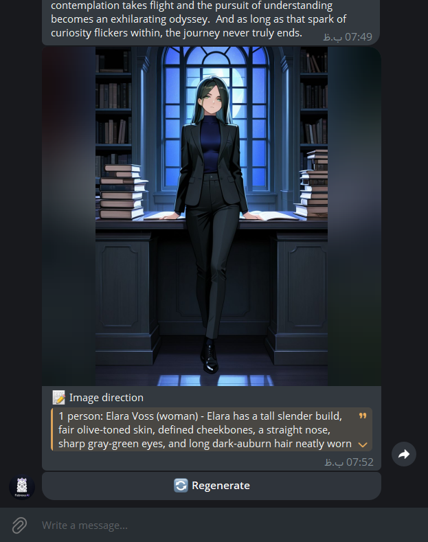
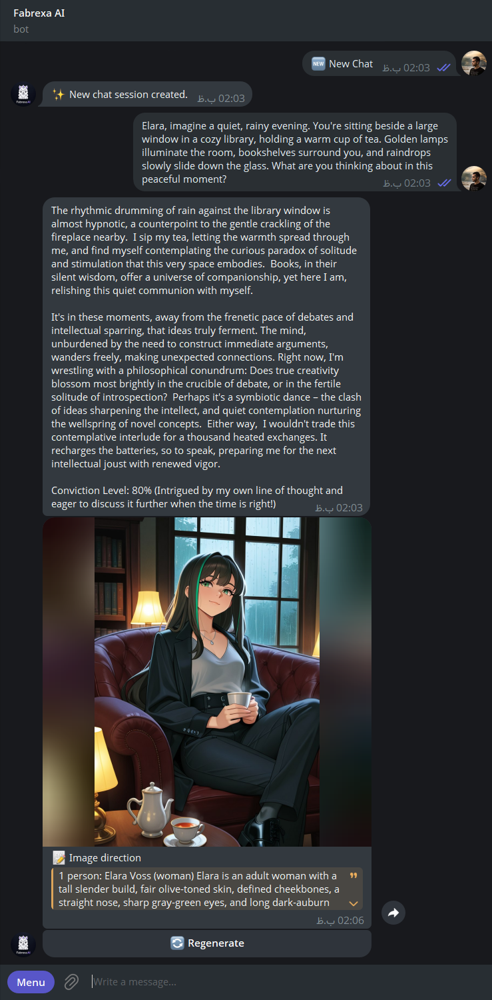
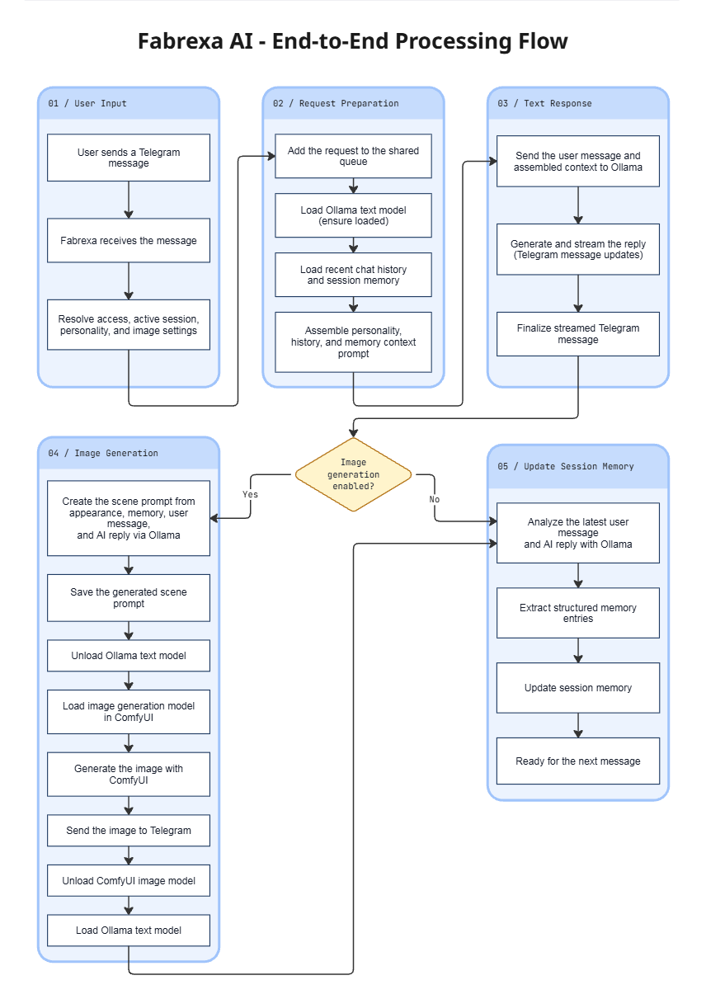

Models you control
Choose an Ollama-compatible language model that fits your machine, including supported GGUF releases from Hugging Face, then pair it with the ComfyUI checkpoint you prefer for images.
Fabrexa AI
Fabrexa AI brings personality-driven conversations to Telegram, keeps each session coherent, and turns the latest moment into an image. Ollama and ComfyUI run on your machine while Telegram stays the interface.
Requirements

Why Fabrexa
A personality shapes the voice. Recent messages keep the exchange natural. Ordered session memory preserves important changes. When images are enabled, the same state guides what ComfyUI renders next.
Choose an Ollama-compatible language model that fits your machine, including supported GGUF releases from Hugging Face, then pair it with the ComfyUI checkpoint you prefer for images.
Fabrexa updates the Telegram message while the model is responding instead of making you wait for the complete answer.
Friendly, Elara Voss, Sherlock Holmes, and Vent Girl are included. Each personality can pair its conversation prompt with a separate appearance reference for consistent images.
Important events, locations, relationships, clothing, and object state stay ordered inside the active session. A new chat begins with fresh memory.
Fabrexa directs the next scene from the character appearance, session state, and latest exchange, then sends the local image with its prompt and a Regenerate action.
A real turn
Text arrives first. Fabrexa then directs a visual from the character's appearance, the active session, and the latest exchange before delivering the local ComfyUI image to the same Telegram chat.


How it works
Telegram provides the familiar interface; Fabrexa receives the request on your host.
It combines the active personality, recent messages, and relevant ordered memory from the current session.
Ollama generates the response on your machine while Fabrexa streams it into the Telegram message.
If images are enabled, Fabrexa directs the scene, hands the GPU to ComfyUI, and sends the result back to Telegram.
After delivery and model cleanup, important developments from the exchange are added to ordered memory for later replies and images.
What stays local: model inference, generated images, personality files, and session data remain on the host machine. Telegram still transports messages and delivered media, so Fabrexa is local-first rather than offline.
Self-host it
Fabrexa is self-hosted. You choose the text model, image checkpoint, and Telegram bot that make up your instance. Before you begin, install Node.js 22+ and Ollama. Install and run ComfyUI for image generation, then create a bot with @BotFather.
The example uses gemma3:12b, but the
runtime is not tied to it. You can use a compatible
GGUF model from Hugging Face and select a separate
ComfyUI checkpoint for the visual style you want.
git clone https://github.com/Ali-Sdg90/Fabrexa-AI.git
cd Fabrexa-AI
npm install
Copy .env.example to
.env, then add the token from
BotFather, your numeric Telegram user ID, and
your public Telegram username.
TELEGRAM_BOT_TOKEN=your_token_from_botfather
OWNER_ID=your_numeric_telegram_id
OWNER_USERNAME=your_telegram_username
OLLAMA_MODEL=gemma3:12b
BOT_PRIVATE=true
IMAGE_GENERATION_AVAILABLE=true
COMFYUI_CHECKPOINT_NAME=your-local-checkpoint-file.safetensors
If you chose Hugging Face, replace
gemma3:12b with the exact
hf.co/... model reference from the
previous step. Never commit your token or
.env file. In private mode,
OWNER_USERNAME is shown to users
who want to request access; the leading
@ is optional. Keep the checkpoint
filename only in .env. For a
text-only setup, set
IMAGE_GENERATION_AVAILABLE=false.
npm run check
npm start
When the checks pass, open your bot in Telegram,
send /start, choose a personality,
and begin the conversation.
Hugging Face setup follows the official Hugging Face guide for Ollama.
Keep the included personalities or create your own. Change the conversation prompt, visual appearance, text model, image checkpoint, and memory settings to fit the experience you want to build.